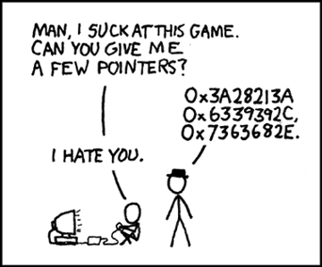

Unison
I use Unison intensively to synchronise my research data between machines, and for other backup-related tasks.
Document processing
I use LaTeX with VIM. Long ago I used Emacs, but a friend showed me VIM and I discovered I liked it. In fact, I prefer the command line.
Window managers
- I used Ratpoison (so called because it kills the mouse) then
- Ion2 (for its tabs). The idea here is to maximise use of precious screen-space. It astonishes me how designers waste space on the screen.
- One day we’ll all be using 60 inch WHUXGA desktops dual 8K monitors, but until then every pixel is precious.
- I switched to KDE because it was so configurable, but found it too bloated so used
- Fluxbox, got fed up and switched back to
- KDE until version 4.
- I used Gome configured to be as much as possible like Ratpoison/the Console until they introduced
- Unity which for me Just Does Not Work, so
- I switched back to KDE and have been using it ever since.
- If you’re doing a computer science degree with any theoretical content, try using xmonad. It’s written in Haskell which is a functional programming language. If it were up to me, we’d make this compulsory for all students on theory streams.
TV (programmes)
Discovery channel, UKTV and similar channels, are wonderful. There’s generally something of acceptable quality on one of them, and the outstanding is not infrequent, such as:
- Schama’s History of Britain.
- The Top Gear US special is even for somebody (like me) who is not particularly into cars, something special.
Radio (programmes)
Of course we mustn’t forget Radio 4, in combination with BBC iPlayer (clunky, but see next item below), or a good Radio app such as Radio FM.
get-iplayer or youtube-dl (program for programmes)
If you can, run get-iplayer or youtube-dl. Both let you record BBC programmes and watch them using whatever media player you want, whenever you want.
Version control
I used CVS and then switched to subversion. Linus Torvalds hates it and designed his own system Git. I’ve never used it, but I agree that subversion is not ideal (specifically, I don’t like having to be connected to the internet to post a commit); so one day I might switch over. But let’s look at the positive here: version control is absolutely fantastic and all the implementations I have seen have changed my life.
Keylay
When I use Windows (which is not very often nowadays) I use Keylay to remap the keyboard in Windows. I set the two alt-keys (those closest to the spacebar) to be shift, so I do not have to strike them with my little fingers which tire easily.
Note: there is no particular connection between the content of the page and the photo of the cat above. The cat just asked to feature on my webpage and posed so beautifully, I couldn’t refuse.